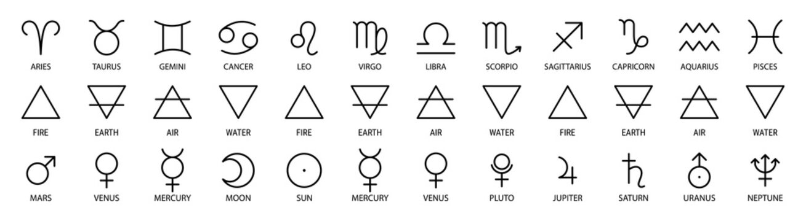

Horoscope Signs
Explore the fascinating world of horoscopes and discover what your zodiac sign says about you.
All Zodiac Signs
Aries
Aries is known for its boldness and leadership qualities. People born under this sign are often confident and enthusiastic.
Taurus
Taurus is recognised for its practicality and reliability. Taurus are often patient, dedicated, and have a strong sense of loyalty.
Gemini.
Gemini is characterised by its adaptability and versatility. Geminis are known for their wit, communication skills, and curiosity.
Cancer
Cancer is known for its emotional depth and nurturing nature. People born under this sign are often intuitive and caring.
Leo
Leo is recognised for its confidence and charisma. Leos are often enthusiastic, ambitious, and natural leaders.
Virgo
Virgo is known for its analytical mind and attention to detail. Virgos are often practical, reliable, and perfectionistic.
Libra
Libra is characterised by its sense of balance and harmony. Libras are often diplomatic, sociable, and value fairness.
Scorpio
Scorpio is known for its intensity and passion. Scorpios are often determined, resourceful, and deeply emotional.
Sagittarius
Sagittarius is recognised for its adventurous spirit and optimism. Sagittarius are often independent, curious, and freedom-loving.
Capricorn
Capricorn is known for its discipline and ambition. Capricorns are often hardworking, practical, and have strong leadership skills.
Aquarius
Aquarius is characterised by its innovative and idealistic nature. Aquarians are often forward-thinking, independent, and open-minded.
Pisces
Pisces is known for its compassion and creativity. Pisceans are often empathetic, intuitive, and imaginative.
Discover your zodiac sign and what it reveals about you.
Understanding your zodiac sign can provide insights into your personality traits, strengths, and areas for growth. Each sign offers unique perspectives and characteristics that shape how you interact with the world. By exploring these traits, you can gain a deeper understanding of yourself and those around you, enhancing your personal and professional relationships.